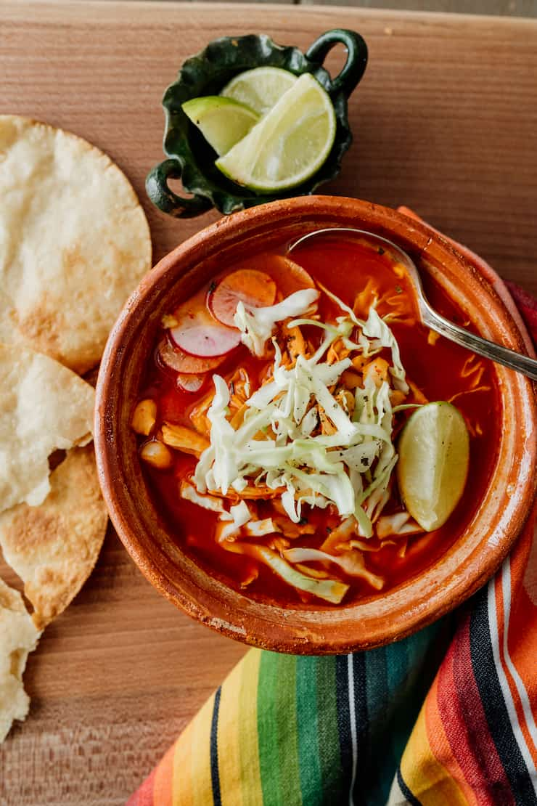

Red Chicken Pozole

Description:
Traditional Mexican pozole (posole) is a rich, brothy soup made with pork, hominy, and red chiles.
Ingredients
- 10 cups of water
- 2 pounds of chicken breast
- 1 small white onion
- 2 garlic cloves
- 2 teaspoons of salt
- 8 New Mexico or guajillo chiles
- 3(15.5-ounce) cans BUSH'S White Hominy
Garnishes
- Shredded cabbage
- Radish slices
- Limes
- Diced onion
- Dried oregano
Steps
- In a 6-quart caldero place chicken, onion, garlic, and 1 teaspoon salt and bring to a boil and then lower heat to medium-low for 20 minutes or until chicken is no longer pink.
- In a large bowl filled with hot water add dried chiles until the chiles have softened about 10 to 15 minutes. Discard liquid.
- Shred the chicken into small pieces.
- In a blender combine 1 cup of the cooked chicken broth with onions, garlic, and softened chiles with 1 teaspoon of salt and blend. Reserve the remaining chicken broth.
- Add the shredded chicken, blended sauce, and White Hominy to the caldero with reserved broth and bring to a boil. Lower the heat and simmer for 20 minutes. If necessary, season with salt.
- Spoon pozole into soup bowls. Let your guests add the garnishes to suit their own taste. Serve with tostadas.